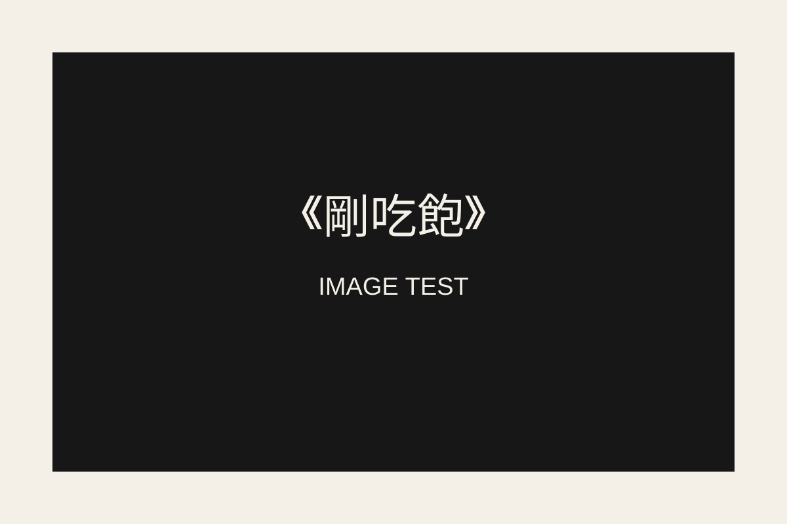

《剛吃飽》圖片裝配實驗區
這個頁面完全獨立，不碰 V8、V9。測試目標：圖片直接存在 GitHub 專案裡，網站用相對路徑讀取；即使某張圖壞掉，正文仍然正常顯示。
測試 A｜本地圖片
如果下面看得到黑底《剛吃飽》圖片，代表 GitHub 本地圖片裝配成功。

檢查中……
測試 B｜故意放一張不存在的圖
這段正文應該永遠看得到，不可以因為圖片故障而整頁卡住。

圖像未裝配。正文仍然正常。
這個頁面完全獨立，不碰 V8、V9。測試目標：圖片直接存在 GitHub 專案裡，網站用相對路徑讀取；即使某張圖壞掉，正文仍然正常顯示。

這段正文應該永遠看得到，不可以因為圖片故障而整頁卡住。